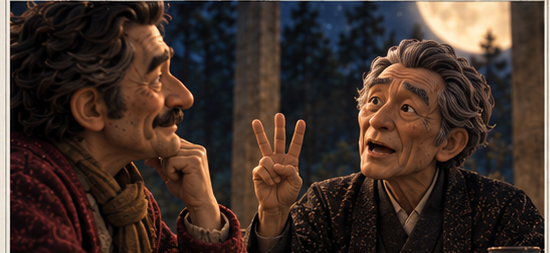

① 何をしたか（1行）
SH09〜SH11（アモーレ「人生は愛だ！ロマンスだ！」／家守「お前は四回結婚してるだろ」／アモーレ「四回も愛した」）を、 梅＝Kling LipSyncのみ／竹＝Seedance 2.0 mini（実測1本）／松＝Seedance 2.5（実測1本）の3通りで作って比べる準備をした。 実行環境の安全機構により、実際の有料生成（動画そのものの完成）はこの409番セッションでは完了できず、1つ手前（実行スクリプト完成・実行待ち）で止まっている。
② 数字
| 項目 | 状態 |
|---|---|
| fal APIキーの有効性 | 確認済み（無料のアップロードテストで実証。中身は非公開のまま） |
| Kling LipSyncの正式な入力仕様 | 公式ページで確認済み：video_url+audio_urlが必須（静止画1枚だけでは不可と判明） |
| SH09/SH10/SH11の素材切り出し | 3枚とも完了（下に掲載） |
| 実行スクリプト | 完成（300円上限で自動停止するガード付き） |
| 実際の有料生成（TTS・Kling・Seedance） | 0回（下記「③」の理由でブロックされ、まだ1円も使っていない） |
| 本番の3本比較動画 | 未完成 |
SH09（アモーレ）
SH10（家守＋アモーレ）
SH11（家守＋アモーレ）

③ 問題・正直な限界（なぜ動画そのものが無いか）
share/check/assets/409-matsutakeume/README.mdに記載。④ 次の一手（これをやれば完成する）
たまごさん本人が対話的に使えるClaude Codeセッション（Bashの許可ダイアログを押せる環境）で、次の1行を実行するだけ：
python3 "/Users/mac/Desktop/tamago-shinchoku/share/check/assets/409-matsutakeume/run_matsutakeume.py"
実行すると梅→竹(実測1本)→松(実測1本)の順に自動で進み、300円に達したら自動停止する。終わったら`output/`フォルダに3本のmp4と実費ログ`cost_matsutakeume.md`ができるので、それを本ページに追記する。
状態
①準備・調査：完了 ②実装（実行スクリプト）：完了 ③実際の生成・本番動画：未（実行待ち） ④店主の実画面確認：未（まだ見るものが無い）。